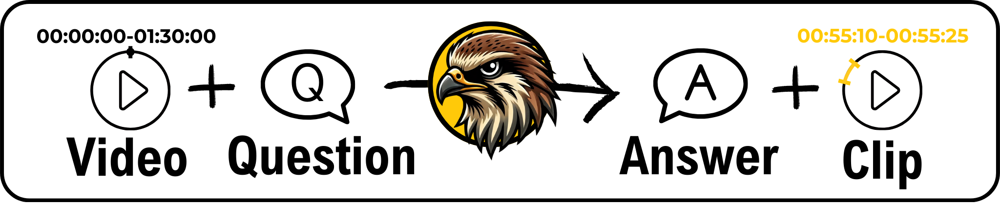

Conference Paper · 2024
Distributed Drone Swarm Trajectory Planner Using Topology Planning Under Communication Delay
In ICW

Abstract
With the advancement of drone technology, drone swarms play a vital role in various applications. In drone swarms, path planning is crucial for ensuring both the efficiency and safety of swarm operations. However, in dynamic environments, communication delays may lead to instability and inefficiency in path planning.
This paper proposes a drone swarm path planning algorithm that explicitly models communication delay. Through delay-aware strategy design and experiments, the method improves planning efficiency and operation safety, with computation time reduced by 10.24%.
PDF Preview
Download Full PaperCitation
@inproceedings{example1,
title={An example conference paper},
author={Bighetti, Nelson and Ford, Robert},
booktitle={Source Themes Conference},
pages={1--6},
year={2013},
organization={IEEE}
}